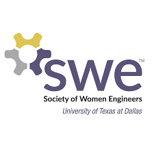
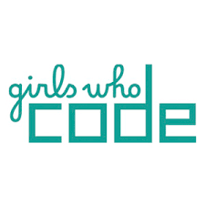
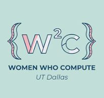

EnchanTobor


The Society of Women Engineers is the world’s largest advocate and catalyst for change for women in engineering and technology.
SWE invite you to explore the values, principles, and priorities that guide our initiatives and learn how together, WE can continue to make a lasting impact on the future.
Check out their Instagram for event times and updates!

Girls Who Code is on a mission to close the gender gap in technology and to change the image of what a programmer looks like and does.
College Loops build belonging and community through weekly meetings during the school year.
Check out their Instagram for event times and updates!

Women Who Compute is an organization focused on uniting women in computer science and helping them to grow as professionals in their field.
Women Who Compute is a community for women pursuing careers in engineering and computer science at The University of Texas at Dallas.
Check out their Instagram for event times and updates!